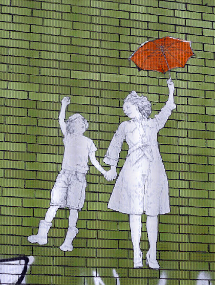

Projects to inspire.
Independent learning is a skill that will guide you in all aspects of life and help you prepare for the future of work in the digital world.
The projects on this website will help you learn some vital skills and build your English language knowledge in a fun and challenging way.
Here you'll find a number of projects to inspire you, although if you have a great idea, feel free to run it by your teacher. One project should take you about 2 weeks to complete and you should aim to complete at least 3.
Submit your projects to: hanastasiou@ozford.edu.au